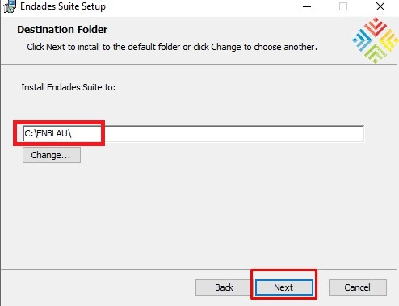
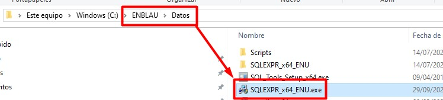
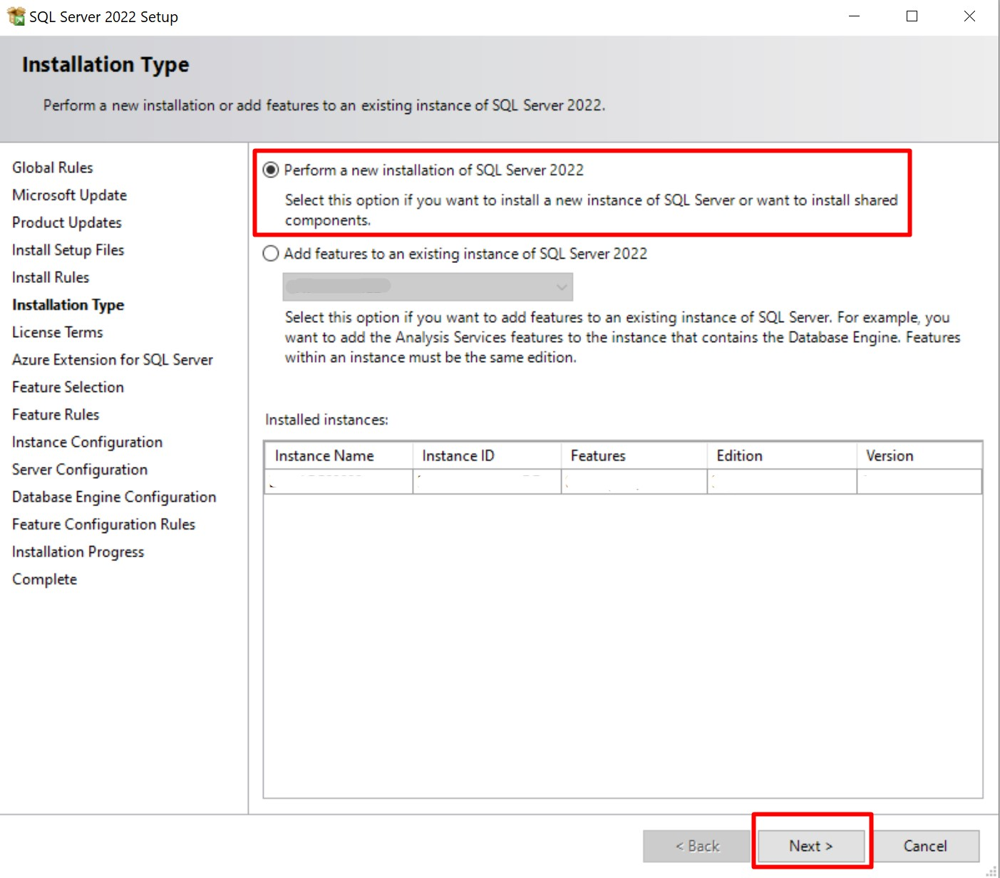
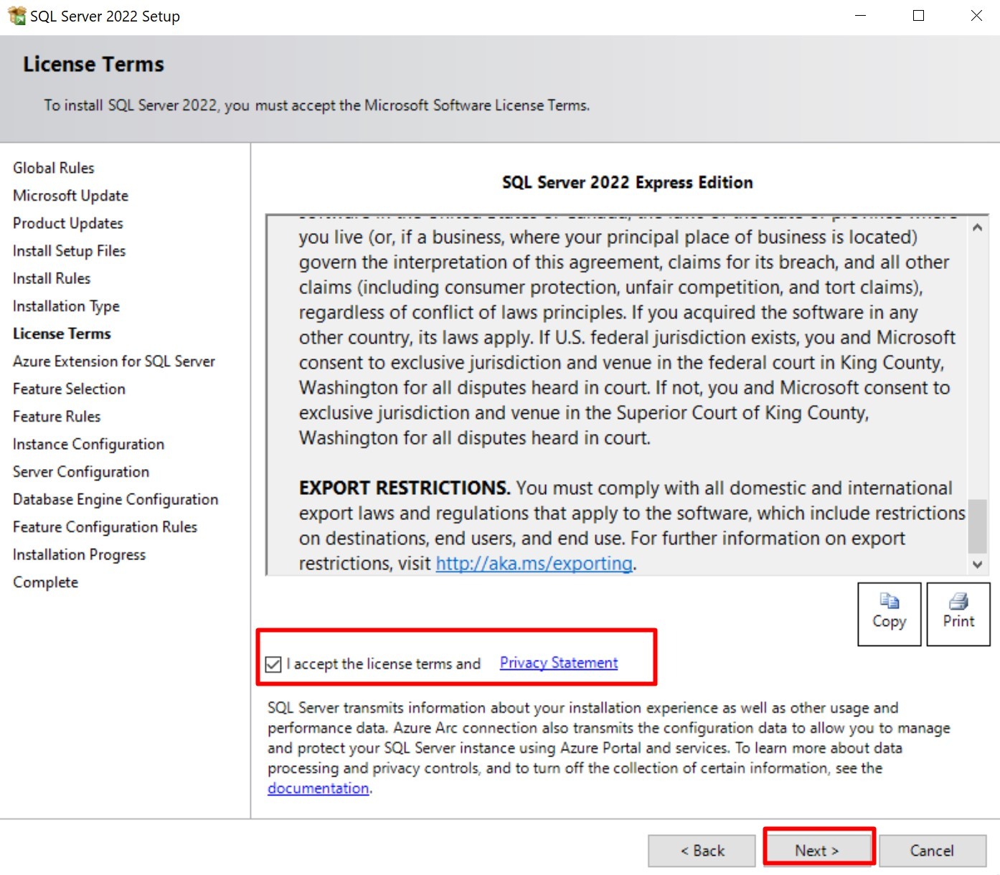
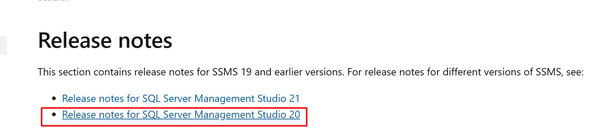
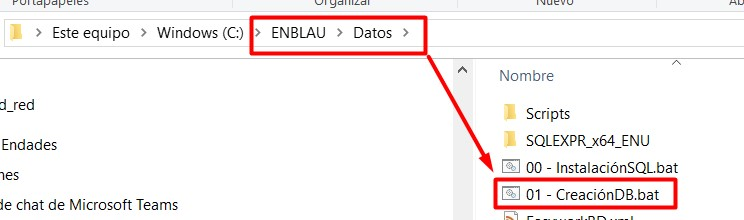

Requisiti dell'ambiente ENBLAU
1. Requisiti per la configurazione dell'app ENBLAU
Prima di procedere con l'installazione e la configurazione di ENBLAU, è necessario effettuare alcune impostazioni preliminari nell'ambiente in cui l'applicazione verrà installata.
1.1. Antivirus e Firewall
Seguire le raccomandazioni riportate nella sezione 2. Impostazioni dell'antivirus e del firewall in Configurazione del Sistema.
2. Installazione di ENBLAU
- Eseguire l'installer
Setup Enblau.msifornito da ENDADES con un doppio clic.

- All'avvio dell'installazione, si aprirà la finestra di Endades Suite Setup. Seguire i passaggi successivi:

-
Accettare i termini della licenza selezionando la casella corrispondente.

-
Specificare il percorso in cui verrà installato ENBLAU.

-
Fare clic su "Installa" per avviare l'installazione.

-
Completare il processo.

3. Installazione e creazione dell'istanza di SQL Server
Per poter utilizzare ENBLAU, è necessario installare SQL Server e creare un'istanza. Questo può essere fatto automaticamente con un file .bat o manualmente.
3.1. Installazione automatica con .bat
- Accedere tramite Esplora Risorse di Windows al percorso di installazione di ENBLAU, ad esempio:
C:\ENBLAU\Datos, e individuare il file00 - InstalaciónSQL.bat.

- Eseguire il file
00 - InstalaciónSQL.batcome amministratore. Questo installerà SQL Server 2022 e creerà l'istanza ENDADES2022.


- Verificare che l'istanza sia stata creata correttamente da SQL Server Configuration Manager:

Nota: Se non è possibile eseguire il file
.batpur avendo i permessi di amministratore, potrebbe essere bloccato dall'antivirus o dal firewall che impedisce alcune connessioni necessarie al file script. Verificare se l'antivirus ha messo il file in quarantena o se il firewall limita l'accesso alla rete o a risorse specifiche.
3.2. Installazione manuale
- Accedere al percorso
C:\ENBLAU\Datose individuare l'eseguibileSQLEXPR_x64_ENU.exe. In alternativa, è possibile scaricarlo da:
https://www.microsoft.com/it-it/download/details.aspx?id=104781

- Eseguire l'installer e seguire i passaggi guidati:






Nome dell'istanza:
ENDADES2022


Password utente
sa:Endades$0


4. Installazione di SQL Server Management Studio (SSMS)
Si consiglia di installare SQL Server Management Studio 20 nell'ambiente dove è stato installato ENBLAU e SQL Server.
- Scaricare la versione da:
https://learn.microsoft.com/it-it/ssms/release-notes-20

- Seguire le istruzioni ufficiali di installazione da:
https://learn.microsoft.com/it-it/ssms/install/install
5. Creazione del database ENBLAU
5.1. Creazione tramite .bat
- Accedere al percorso di installazione di ENBLAU, ad esempio:
C:\ENBLAU\Datos, e individuare il file01 - CreaciónDB.bat.

-
Eseguire il file come amministratore. Questo eseguirà gli script
CreateDB.sqleStructure.sqlsituati inC:\ENBLAU\Datos\Scripts. -
Una volta completato, verrà creato un database chiamato Easywork nell'istanza
server\ENDADES2022, che sarà utilizzato da ENBLAU.
Nota: Se non è possibile eseguire il file
.batpur avendo i permessi di amministratore, potrebbe essere bloccato dall'antivirus o dal firewall che impedisce alcune connessioni necessarie al file script. Verificare se l'antivirus ha messo il file in quarantena o se il firewall limita l'accesso alla rete o a risorse specifiche.
5.2. Creazione manuale
- Accedere al percorso di installazione di ENBLAU, ad esempio:
C:\ENBLAU\Datos\Scripts, e individuare gli scriptCreateDB.sqleStructure.sql.

- Aprire SQL Server Management Studio, connettersi al server corrispondente, ad esempio:
server\ENDADES2022. Assicurarsi di usare l’utente sa e la password Endades$0.

- Aprire prima il file
CreateDB.sqled eseguirlo.

- Poi ripetere lo stesso processo con il file
Structure.sql.
⚠️ Importante: Gli script devono essere eseguiti nell'ordine indicato: prima CreateDB.sql, poi Structure.sql.
6. Selezione del database in ENBLAU
- Al primo avvio di ENBLAU, verrà richiesto di selezionare un database. Fare clic su OK.

- Nella finestra enCONNECT (app che si apre per Seleziona database), nel campo Server, selezionare l'istanza creata, ad esempio:
server\ENDADES2022.

- Fare clic su Carica database, aprire il campo corrispondente e selezionare Easywork dall'elenco.

7. Connessione all’unità di rete
Per collegarsi a ENBLAU da un PC Windows, è necessario configurare correttamente la connessione all’unità di rete.
Questo passaggio è fondamentale affinché il programma funzioni correttamente.
Consulta la guida dettagliata al seguente link:
üîó Connetti unit√† di rete
Nota: Per ulteriori informazioni su Possibili errori
⚠️ Importante: È obbligatorio utilizzare almeno SQL Server 2022 per garantire la compatibilità con le versioni di ENBLAU e enSITE.
 Español
Español
 English
English
 Italiano
Italiano
 Português
Português